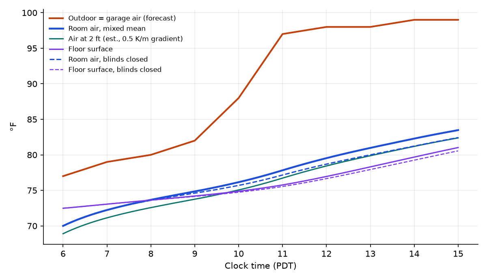
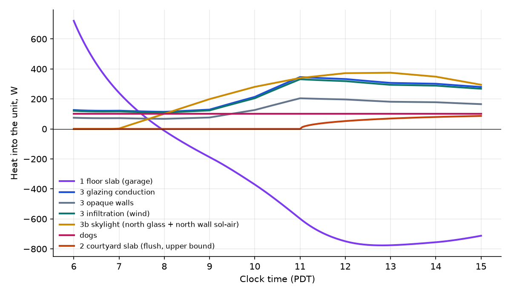
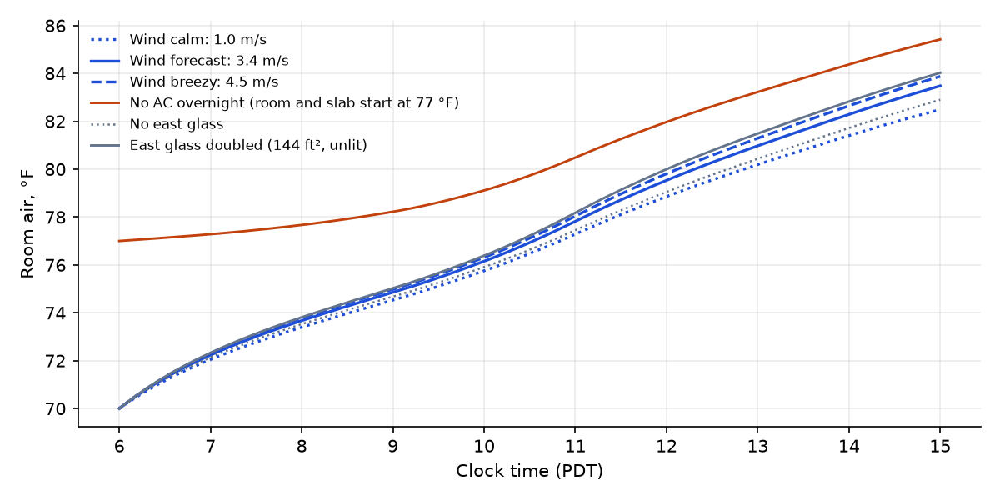
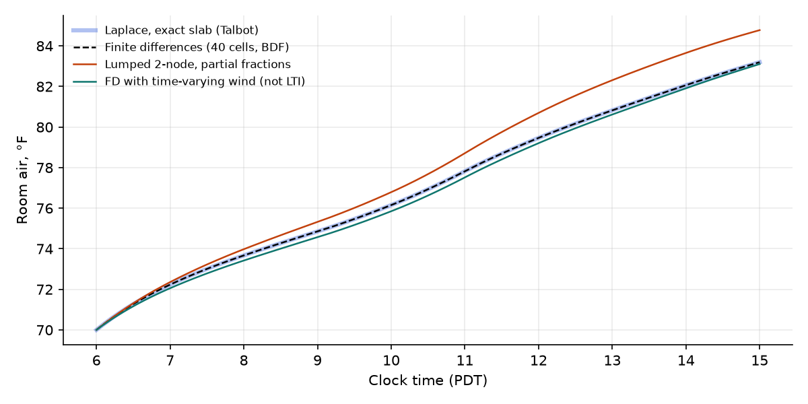

A second-floor, northeast-corner apartment with no direct sun and two dogs inside. The AC holds the unit at 70 °F until 6 am, then shuts off. I model the floor slab, a sunlit courtyard slab, and the north and east walls as a linear heat network, solve it in the Laplace domain, and check the result with finite differences.
Starting from 70 °F at 6 am, the room air reaches about 83.5 °F by 3 pm (about 82.5 °F at dog height) while it is 99 °F outside. The floor stays cooler, near 81 °F.
With the north blinds closed, those numbers drop to about 82.4 °F air and 80.6 °F floor. The overnight AC buys about 2 °F at 3 pm compared with no AC. The 8-inch slab explains most of the lag: it soaks up heat from the room after 8 am, and the garage heat moving up through it mostly arrives tonight.
I could not reach the National Weather Service or Open-Meteo data feeds from this environment, so I took the published hourly forecast from web search results. That forecast shows an Extreme Heat Warning from 5 to 8 October, clear skies, a high of 99 °F, and wind from the west at 5–10 mph, light and variable in the early morning.
| Clock | 6 | 7 | 8 | 9 | 10 | 11 | 12 | 13 | 14 | 15 |
|---|---|---|---|---|---|---|---|---|---|---|
| Air, °F | 77* | 79 | 80 | 82 | 88 | 97 | 98 | 98 | 99* | 99* |
| Sun altitude, ° | −11 | 2 | 14 | 26 | 37 | 45 | 51 | 51 | 47 | 39 |
* Interpolated from the forecast's daily high and the overnight trend. Sun altitude is computed for 32.72° N on day 278: declination −5.8°, sunrise about 6:50, solar noon 12:36 PDT. The garage air is taken equal to this outdoor air, as specified.
Every piece of the problem is linear with constant coefficients once the film coefficients are fixed. Every input is a ramp, a step, or a sum of shifted ramps and steps. That gives the Laplace method three tools that do almost all of the work:
Write every temperature as a deviation \(\theta\) from 77 °F, the 06:00 outdoor and garage temperature. The room, its furnishings and drywall form one node with effective capacitance \(C_a\). The balance on that node is
Here \(q_f\) is the heat flux up through the floor and \(Q\) collects the dogs, skylight through the windows, the courtyard term and, before 6:00, the AC. The room starts at 70 °F, not 77 °F, and section 8 shows how to handle that without solving for the slab's initial temperature profile.
Inside the slab, \(\partial_t\theta=\alpha\,\partial_{zz}\theta\). Transforming in time gives \(\Theta''=(s/\alpha)\Theta\), whose solutions are \(\cosh\) and \(\sinh\) of \(\gamma z\) with \(\gamma=\sqrt{s/\alpha}\). Tracking the temperature and the flux \(\Phi=-k\Theta'\) at both faces turns the slab into a 2×2 transfer matrix. This is the thermal-quadrupole method. Each air film is a series resistance, and the layers multiply:
The top row gives the floor flux into the room directly, \(\Phi_a=(\Theta_o-\mathcal A\,\Theta_a)/\mathcal B\). Substituting it into the room balance gives two exact transfer functions:
As a check, when \(s\to0\) we get \(\mathcal A\to1\) and \(\mathcal B\to R_{\text{total}}\), so \(G_o(0)=1\). Given enough time, the room reaches the outdoor temperature.
The forecast is piecewise linear, so it is a sum of ramps that switch on at each hourly kink, where \(\Delta m_k\) is the change in slope at \(t_k\):
The other inputs follow the same pattern. Skylight on the north windows follows the clear-sky curve, so I sample it hourly and it becomes another sum of shifted ramps. The AC shutting off at 6:00 is a step, covered in section 8. The courtyard sun is a delayed step, \(q_\odot\,e^{-t_s s}/s\).
I invert only the undelayed unit responses once, for example \(r(t)=\mathcal L^{-1}\{G_o(s)/s^2\}\). Then the answer is assembled by shifting:
\(G_o\) contains \(\cosh\sqrt{s}\), so it has infinitely many poles and is easier to invert numerically. I use Talbot's contour method from mpmath. It is accurate to many digits for functions like this, as long as no \(e^{-as}\) factor is left inside the integral. Pulling the delays out first, as above, is what makes that work.
If the slab is collapsed into a single node \(C_s\), splitting its resistance half to each face, \(G(s)\) becomes a rational function with two real poles. Every response is then a short sum of residues:
The poles give the system's two time constants. τ₁ ≈ 1.6 h is the room trading heat with the slab. τ₂ ≈ 17 h is the whole slab-and-room system following the outdoors. The second one is why the room lags so much. The lumped model reads about 1.6 °F high by 3 pm, though. With Biot number ≈ 1.3 and Fourier number < 1 over the day, an 8-inch slab is not thermally thin, and the exact two-port matters.
Treat the podium slab as a fin along the horizontal coordinate \(x\). This lumps it through its thickness, which overstates how fast heat spreads sideways, so the result is an upper bound. The sunlit courtyard is \(x<0\) and the shaded interior is \(x>0\). Transforming in time gives
Here \(H_i\) is the total surface conductance per unit area of slab in each region. Matching temperature and flux at \(x=0\), the flux reaching the unit's edge a distance \(L\) away is
The heat only penetrates a distance on the order of \(\sqrt{\alpha t}\approx\) 0.1–0.15 m into concrete over a working day. With the sun clearing the building at an assumed 11:00 and 414 W/m² absorbed, a courtyard that shares a 15 ft edge directly with your slab delivers at most about 85 W by 3 pm. If even one neighboring unit's floor sits between the courtyard and yours (L = 25 ft), the factor \(e^{-m_2 L}\approx e^{-90}\), and the courtyard contributes zero today. Since you describe the courtyard as southwest of the unit, with units to the west and south, the second case is the likely one.
The insulated walls carry little mass, so I treat them as pure conductances. Wind enters in three places, each through a constant coefficient:
Glazing is two 9′ × 4′ windows on the north wall and, as an assumption, the same 72 ft² on the east wall. The east windows look only at the unlit wall of the building next door. That wall blocks the sky, so the east glass gets no daylight and acts purely as a conductor. Its outside surface sits near outdoor air temperature, which the U-value already covers. At the forecast 3.4 m/s this gives \(K\) = 32.5 (glass, half north and half east) + 19.2 (walls) + 31.1 (infiltration) = 82.7 W/K. Glass and air leakage are about equal shares, and leakage is the term the wind drives most.
A clear sky is bright everywhere, not just where the sun is. On a clear October day the sky dome alone delivers around 100 W/m² to a horizontal surface at midday. A north window sees half of that sky, plus light reflected off the ground and nearby buildings. I estimate the window face gets about \(0.12\times\) the global horizontal irradiance, peaking near 95 W/m² around 1 pm. Double glazing passes about half of that as heat. Over 6.7 m² of glass, that is about 320 W at peak, the heat of roughly three dogs. Skylight also warms the outside of the north wall slightly (the "sol-air" effect), which adds about 55 W. The east wall faces the neighbor's unlit wall and gets neither. Together the north-side gains peak at about 375 W around 1 pm, and closing the north blinds is the one control you have over them.
The AC runs all night, so at 6:00 the room is 70 °F while the garage is 77 °F. Inside the slab there is a steady temperature gradient between the two. Feeding that gradient into the transformed PDE as an initial condition is messy. Superposition gives an easier route:
The slab's initial temperature profile is never needed. The same formula applied to the floor flux gives the floor's response. The finite-difference check starts from the explicit linear profile instead and lands on the same curve.
The 7 °F head start shrinks quickly, though. A cold room pulls heat in faster through every route, and the slab's warmer underside starts releasing heat upward right away. By 3 pm the precooled unit is only about 2 °F cooler than one that started at 77 °F. Before 8 am the floor is actually warmer than the air and gives off heat. After that the warming room reverses the flow, and the slab becomes a sink again.


| Route | Model | 3 pm, W | 6 am–3 pm, kWh |
|---|---|---|---|
| 1 · Floor slab, garage below | exact two-port | −712 | −3.3 |
| 2 · Courtyard slab, edge flush | Laplace fin, upper bound | +87 | +0.26 |
| 2 · Courtyard slab, one unit away | same | 0 | 0 |
| 3 · Double glazing, N + E conduction | UA = 32.5 W/K | +280 | +2.1 |
| 3 · Opaque N/E walls | UA = 19.2 W/K | +165 | +1.2 |
| 3 · Infiltration (wind) | 0.37 ACH | +268 | +2.0 |
| 3b · Skylight: north glass + north wall sol-air | hourly ramps | +295 | +2.2 |
| Dogs | constant | +100 | +0.9 |
| Net stored in room air and furnishings | ≈ +5.3 |
The table shows what is going on in the floor. The garage pushes heat into the underside of the slab all day, but the diffusion time through 8 inches, \(d^2/\alpha\approx14\) h, means very little of it reaches the top surface by 3 pm. The AC left the top of the slab cool. Once the room warms past it, around 8 am, the slab's top half starts absorbing heat from the room. The slab's heat capacity is about 29 MJ/K, more than 11 times the room's. By evening the slab turns into a heat source and keeps the unit warm overnight.
| Clock | Outdoor | Room air | Air at 2 ft | Floor | Air, blinds closed | Floor, blinds closed |
|---|---|---|---|---|---|---|
| 6:00 | 77 | 70.0 | 68.9 | 72.5 | 70.0 | 72.5 |
| 7:00 | 79 | 72.2 | 71.1 | 73.1 | 72.2 | 73.1 |
| 8:00 | 80 | 73.7 | 72.6 | 73.6 | 73.6 | 73.6 |
| 9:00 | 82 | 74.9 | 73.8 | 74.2 | 74.6 | 74.1 |
| 10:00 | 88 | 76.2 | 75.1 | 74.9 | 75.7 | 74.7 |
| 11:00 | 97 | 77.8 | 76.7 | 75.8 | 77.2 | 75.5 |
| 12:00 | 98 | 79.5 | 78.4 | 77.0 | 78.7 | 76.7 |
| 13:00 | 98 | 81.0 | 79.9 | 78.3 | 80.0 | 77.9 |
| 14:00 | 99 | 82.3 | 81.2 | 79.7 | 81.2 | 79.3 |
| 15:00 | 99 | 83.5 | 82.4 | 81.0 | 82.4 | 80.6 |
All values in °F. The 2 ft column assumes a constant gradient. Treat it as an estimate within ±1 °F.


Each of these is a parameter in apartment_heat.py and can be changed with one edit. They are listed roughly in order of how much they move the 3 pm answer.
| Item | Value used | Effect if wrong |
|---|---|---|
| AC steady state before 6:00 | room 70 °F, garage 77 °F, linear slab profile | If the AC cycled off earlier, the slab top is warmer. No AC at all gives +1.9 °F. |
| Skylight on north glass | 0.12 × GHI (≈95 W/m² peak), SHGC 0.5 | Blinds closed gives −1.1 °F at 3 pm. |
| East glazing | assumed two 9′ × 4′, unlit (faces neighbor's wall) | About ±0.3 °F per 9′ × 4′ window. |
| Slab | 8 in concrete, k = 1.6, thin vinyl finish | Carpet would insulate the room from the slab sink and make it warmer. |
| Room capacitance \(C_a\) | 2.5 MJ/K (air, drywall, furniture) | Mainly changes the fast mode and how quickly the 70 °F start fades. |
| Garage film \(h_g\) | 10.3 W/m²K (convection + radiation) | Small effect, because slab diffusion is the bottleneck. |
| Dogs | 100 W sensible for two ~25 kg dogs | ±50 W gives about ±0.3 °F. |
| Sun clears courtyard roofline | 11:00, step | Irrelevant unless the courtyard slab touches yours. |
The model is in src/laplace_apartment/ of your num-methods-for-PDEs working copy. apartment_heat.py holds the transfer functions, Talbot inversion, residue model, finite differences and figures. solar.py handles sun position and clear-sky irradiance. Run python3 apartment_heat.py, which takes about 2 minutes.
Forecast sources: Weather Underground hourly, AccuWeather hourly, WeatherBug hourly, NWS point forecast, retrieved through web search on 5 Oct 2026.